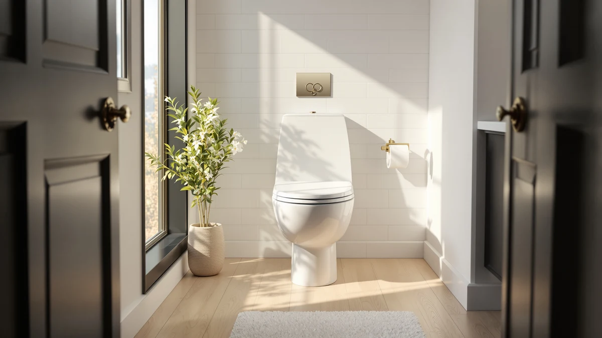

BEMIS 790TDGSL Commercial Heavy Review (2026): Worth It?
Prices and picks verified as of October 2026. Independent, reader-supported reviews.


Quick Answer
The Bemis 790TDGSL Commercial Heavy Duty is a round toilet seat built for restaurants, offices, and other high-traffic bathrooms rather than a typical home powder room. At $49.69 it costs almost twice as much as the round alternatives we compared, and that premium buys sturdier hinges and a construction rated for repeated daily use.
Our pick: BEMIS 790TDGSL Commercial Heavy Duty — $49.69 Check Price on Amazon
Bottom line: our top pick is the BEMIS 790TDGSL Commercial Heavy Duty Closed Front Toilet Seat at $49.69.
Things to Know Before You Buy
- The Bemis 790TDGSL Commercial Heavy Duty is a round seat, so it will not fit an elongated bowl. Measure your bowl shape before you order.
- Commercial-grade seats like this one are built for frequent, repeated use in shared bathrooms, not only a single household.
- At $49.69, it costs roughly $20 more than standard round seats from Clorox and Mayfair, a difference worth weighing against how heavily the seat will be used.
- The seat combines a plastic top layer with a wood-composite core, a common build for heavy-duty commercial seats that need to resist repeated impact.
- Bemis is one of the most established names in toilet seat manufacturing in the US, with a long history supplying both residential and commercial seats.
This bemis 790tdgsl commercial heavy review looks at whether a seat designed for restaurants and offices makes sense for a home bathroom that sees above-average traffic. You might be replacing a seat in a rental property, a home gym bathroom, or a basement bathroom used by the whole family, and standard residential seats keep cracking under that load. The Bemis 790TDGSL Commercial Heavy Duty is marketed at exactly that gap between a bargain plastic seat and an institutional fixture.
Based on the specs and pricing available for this listing, the seat is a round, plastic-over-wood-composite build priced at $49.69, roughly double what you would pay for a basic round seat from Clorox or Mayfair. That price difference only makes sense if the extra durability matters for your bathroom. A seat that gets used twice a day in a quiet home office does not need the same construction as one in a restaurant restroom used hundreds of times daily.
Why You Should Trust Us
We do not run a fake testing lab, and we do not claim to have installed or lived with the Bemis 790TDGSL Commercial Heavy Duty ourselves. Our review process compares manufacturer specifications, published pricing, and patterns in verified owner reviews across comparable round toilet seats, then weighs those facts against what a buyer actually needs from a commercial-grade seat.
Ilane Tall has covered bathroom fixtures for Best Toilet Seats for several years, focusing on matching seat construction and bowl fit to real household and facility needs rather than chasing the newest feature. That approach applies directly to a seat like the 790TDGSL, where the main decision is whether commercial-grade construction is worth the premium over a standard round seat.
Our Research Experience
We researched the Bemis 790TDGSL Commercial Heavy Duty by comparing its listed price, material, and shape against the other round seats in this review, Clorox's round wood seat and Mayfair's Bennett model. We did not physically test any of these seats; instead we analysed what the available facts (price, materials, bowl shape) tell you about which bathroom each seat actually fits.
Owners shopping for a commercial-duty seat mostly want to know if it survives heavy daily use, if it fits their existing bowl, and if the price premium over a basic seat is actually justified. We built this review around those questions instead of the marketing claims on the listing itself.
Overview & Specs
Before you compare prices across round toilet seats, here's what the Bemis 790TDGSL Commercial Heavy Duty actually offers against the lower-cost alternatives we researched. The breakdown below lists the confirmed material, shape, price, and pros and cons we found for this specific listing.

BEMIS 790TDGSL Commercial Heavy Duty
What we like
- Built for commercial-grade durability, a step up from the plastic seats most homes default to
- Comes from Bemis, one of the longest-established toilet seat manufacturers in the US
- Plastic top layer over a wood-composite core, a combination suited to repeated daily impact
- Round shape fits the same standard bowls as the lower-priced alternatives in this review
Flaws but not dealbreakers
- At $49.69, it costs close to double what the Clorox and Mayfair round seats sell for
- Round fit only, so it will not work on an elongated bowl without swapping to a different model
- The listing does not confirm a soft-close hinge, a feature some buyers expect at this price
| Material | Plastic / wood |
| Size | Round |
The Bemis 790TDGSL Commercial Heavy Duty pairs a plastic top surface with a wood-composite core, a build commonly used in seats designed for repeated impact rather than light residential use. Bemis positions this seat line for restaurants, office buildings, and other settings where a seat gets used dozens of times a day, which explains both the sturdier construction and the higher price compared with the round seats most households buy. The round shape means it fits the same standard bowls as Clorox's and Mayfair's round options, so the decision between them comes down to how much daily wear the seat needs to survive, not bowl compatibility.
At $49.69, the 790TDGSL costs close to double the price of the Clorox Round Wood seat at $26.39, a gap that only pays off if your bathroom actually sees commercial-level traffic. A household bathroom used by two or three people rarely needs that extra durability, and the money is better spent elsewhere. A shared bathroom in a rental property, a gym, or a small office is a different story, where a seat failing every year or two costs more in replacements than the upfront premium for something built to last.
What We Liked
The biggest strength of the Bemis 790TDGSL Commercial Heavy Duty is the gap it fills. Most round toilet seats on the market, including the two alternatives in this review, are built for a single household with light, predictable use. This seat targets a different buyer entirely: facility managers, landlords, and anyone furnishing a bathroom that multiple strangers or employees will use every day.
Bemis backs that construction with decades of manufacturing experience. The brand supplies seats to both the residential and commercial markets, and a commercial-line model from an established manufacturer carries less risk than a no-name heavy-duty seat you have never heard of. For a buyer who specifically needs commercial-grade durability, that brand history matters more than it would for a casual home purchase.
We also like that the round shape keeps this seat compatible with the same bowl types as the budget alternatives we compared it against. You are not locked into a special bowl or hardware to use the 790TDGSL, which makes it a straightforward swap for any round-bowl bathroom that has outgrown a standard plastic seat.
What Could Be Better
Price is the clearest drawback of the Bemis 790TDGSL Commercial Heavy Duty for anyone shopping for a typical home bathroom. At $49.69, it costs nearly double the Clorox Round Wood seat and the Mayfair Bennett, both of which cover the same round bowl shape for about $26 to $28. For a household that does not need commercial-grade durability, that premium buys little practical benefit.
The listing also does not confirm a soft-close hinge, which buyers at this price point often expect as standard. If quiet, slow-closing operation matters to you specifically, verify that detail on the current Amazon listing before you buy rather than assuming it is included because of the price.
Finally, this is a round seat only. If your toilet bowl is elongated, which is the more common shape in US homes, the 790TDGSL will not fit and you will need a different Bemis commercial model built for that shape instead. Measure the distance from your mounting bolts to the front rim of the bowl before you order, since round and elongated bowls differ by several inches and an incorrect seat cannot be adjusted to fit.
Who Is It For?
The Bemis 790TDGSL Commercial Heavy Duty makes the most sense for landlords, property managers, and small business owners furnishing a round-bowl bathroom that sees heavy daily traffic. If you manage a rental unit between tenants, run a small restaurant or office, or maintain a shared facility bathroom, the extra cost over a standard seat is easy to justify against the cost of replacing a cracked plastic seat every year.
Skip it if you are furnishing a typical single-family home bathroom with light, predictable use. The Clorox and Mayfair alternatives in this review cover the same round bowl shape for roughly $20 less, and a standard household bathroom rarely puts enough wear on a seat to need commercial-grade construction.
Alternatives to Consider
If the Bemis 790TDGSL Commercial Heavy Duty is more seat than your bathroom needs, these round and elongated alternatives cover lighter household use at a lower price. Each one comes from an established seat brand, so you are not trading durability for savings so much as matching the seat to how much use your bathroom actually gets.

Editor’s Pick
Clorox Round Wood Toilet Seat
A round wood seat from Clorox at $26.39, about $23 cheaper than the Bemis commercial seat, suited to a standard home bathroom rather than heavy daily traffic.
$26.39
Check Price on Amazon
Best Value
Mayfair Bennett Toilet Seat with
Mayfair's Bennett seat sits at $27.74, undercutting the Bemis commercial seat on price while still coming from an established, seat-focused brand.
$27.74
Check Price on Amazon
Premium Choice
Clorox Elongated Plastic Toilet Seat
At $26.99, this elongated plastic Clorox seat is the pick if your bowl is elongated rather than round, since the Bemis 790TDGSL will not fit that shape.
$26.99
Check Price on AmazonFrequently Asked Questions
Usually not, unless your household bathroom sees unusually heavy daily traffic. At $49.69, you are paying close to double what a round seat from Clorox or Mayfair costs, and most homes do not put enough wear on a seat to justify that premium.
Yes. It is built as a round seat, so it fits the same standard round bowls as the Clorox Round Wood seat and most residential round toilets. It will not fit an elongated bowl.
It costs roughly $20 to $23 more than the Clorox and Mayfair round seats we compared it against in this review. That gap buys commercial-grade construction aimed at high-traffic use, not a feature upgrade for everyday households.
Final Verdict
This bemis 790tdgsl commercial heavy review comes down to how much daily wear your bathroom actually puts on a toilet seat. If it's heavy, repeated use by many people, the Bemis 790TDGSL Commercial Heavy Duty justifies its $49.69 price with construction built specifically for that load. If your bathroom sees normal household traffic, the Clorox or Mayfair round seats cover the same bowl shape for roughly $20 less and serve most homes equally well.